Fits generalized linear latent variable model for multivariate data. The model can be fitted using Laplace approximation method or variational approximation method.
gllvm(
y = NULL,
X = NULL,
TR = NULL,
data = NULL,
formula = NULL,
family,
num.lv = NULL,
num.lv.c = 0,
num.RR = 0,
lv.formula = NULL,
lvCor = NULL,
studyDesign = NULL,
dist = list(matrix(0)),
distLV = matrix(0),
colMat = NULL,
colMat.rho.struct = "single",
corWithin = FALSE,
corWithinLV = FALSE,
quadratic = FALSE,
row.eff = FALSE,
sd.errors = TRUE,
offset = NULL,
method = "VA",
randomB = FALSE,
randomX = NULL,
beta0com = FALSE,
zeta.struc = "species",
plot = FALSE,
link = "probit",
Ntrials = matrix(1),
Power = 1.1,
seed = NULL,
scale.X = TRUE,
return.terms = TRUE,
gradient.check = FALSE,
disp.formula = NULL,
control = list(reltol = 1e-10, reltol.c = 1e-08, TMB = TRUE, optimizer = ifelse((num.RR
+ num.lv.c) <= 1 | randomB != FALSE, "optim", "alabama"), max.iter = 6000, maxit =
6000, trace = FALSE, optimizer.trace = 0, optim.method = NULL, nn.colMat = 10,
colMat.approx = "NNGP"),
control.va = list(Lambda.struc = "unstructured", Ab.struct = ifelse(is.null(colMat),
"blockdiagonal", "MNunstructured"), Ab.struct.rank = 1, Ar.struc = "diagonal",
diag.iter = 1, Ab.diag.iter = 0, Lambda.start = c(0.3, 0.3, 0.3), NN = 10),
control.start = list(starting.val = "res", n.init = 1, n.init.max = 10, jitter.var = 0,
jitter.var.br = 0, start.fit = NULL, start.lvs = NULL, randomX.start = "res",
quad.start = 0.01, start.struc = "LV", scalmax = 10, MaternKappa = 1.5, rangeP =
NULL, zetacutoff = NULL, start.optimizer = "nlminb", start.optim.method = "BFGS"),
setMap = NULL,
...
)(n x m) matrix of responses.
matrix or data.frame of environmental covariates.
matrix or data.frame of trait covariates.
data in long format, that is, matrix of responses, environmental and trait covariates and row index named as "id". When used, model needs to be defined using formula. This is alternative data input for y, X and TR.
an object of class "formula" (or one that can be coerced to that class): a symbolic description of covariate effects \(\beta_j\) that are estimated separately for each species (column). Accepts both fixed-effect terms, and mixed-model syntax (as in lme4), e.g. ~ x1 + (1|group), to add species-specific random intercepts/slopes (returned as Br and covariance matrix sigmaB). The variable(s) must be included in X.
distribution function for responses, or a vector of families for mixed response type model. Options are "negative.binomial" and "negative.binomial1" (with log link), poisson(link = "log"), binomial (with probit, logit, or cloglog link), beta-binomial ("beta.binomial") (with probit, logit, or cloglog link, for "LA"-method only), zero-inflated binomial (ZIB), zero-and-N-inflated binomial (ZNIB) zero-inflated poisson ("ZIP"), zero-inflated negative-binomial ("ZINB"), gaussian(link = "identity"), Tweedie ("tweedie") (with log link), "gamma" (with log link), "exponential" (with log link), beta ("beta") (with logit and probit link, for "LA" and "EVA"-method), "ordinal" (with "VA"-method with probit, logit, or cloglog link, or with "EVA"-method with logit link; not available with "LA"-method), beta hurdle "betaH" (with probit or logit link, for "VA", "EVA" and "LA"-method) and "orderedBeta" (with "VA"-method with probit or logit link, or with "EVA"-method with logit link). Note: "betaH" and "orderedBeta" with "VA"-method are actually fitted using a hybrid approach such that EVA is applied to the beta distribution part of the likelihood.
number of latent variables, d, in gllvm model. Non-negative integer, less than number of response variables (m). Defaults to 2, if num.lv.c=0 and num.RR=0, otherwise 0.
number of latent variables, d, in gllvm model to inform, i.e., with residual term. Non-negative integer, less than number of response (m) and equal to, or less than, the number of predictor variables (k). Defaults to 0. Requires specification of "lv.formula" in combination with "X" or "datayx". Can be used in combination with num.lv and fixed-effects, but not with traits.
number of latent variables, d, in gllvm model to constrain, without residual term (reduced rank regression). Cannot yet be combined with traits.
an object of class "formula" (or one that can be coerced to that class): defines the effects that inform the ordination axes in concurrent (num.lv.c) and/or constrained (num.RR) ordination. Accepts fixed effects or random effects, not both at the same time. Random effects formulation requires specifying the randomB argument.
correlation structure for latent variables, defaults to NULL Correlation structure for latent variables can be defined via formula, eg. ~struc(1|groups), where option to 'struc' are corAR1 (AR(1) covariance), corExp (exponentially decaying, see argument 'dist'), corCS (compound symmetry), and corMatern (Matern covariance, see argument 'dist'). The grouping variable needs to be included either in studyDesign. Works at the moment only with ordination without quadratic term.
variables related to eg. sampling/study design, used for defining correlation structure of the latent variables and row effects.
list of length equal to the number of row effects with correlation structure corExp, corMatern that holds the matrix of coordinates or time points.
matrix of coordinates or time points used for LV correlation structure corExp, corMatern.
either a list of length 2 with matrix of similarity for the column effects and named matrix "dist" of pairwise distances (of columns, to use in selecting nearest neighbours) for a sparse approximation of the matrix inverse in the likelihood, or only a (p.d.) matrix of similarity for the column effects for a normal inverse calculation.
either single (default) or term indicating whether the signal parameter should be shared for covariates, or not.
logical. Vector of length equal to the number of row effects. For structured row effects with correlation, If TRUE, correlation is set between row effects of the observation units within group. Correlation and groups can be defined using row.eff. Defaults to FALSE, when correlation is set for row parameters between groups.
logical. For LVs with correlation, If TRUE, correlation is set between rows of the observation units within group. Defaults to FALSE, when correlation is set for rows between groups.
either FALSE(default), TRUE, or LV. If FALSE models species responses as a linear function of the latent variables. If TRUE models species responses as a quadratic function of the latent variables. If LV assumes species all have the same quadratic coefficient per latent variable.
FALSE, fixed, "random" or an object of class "formula": defines the community-level or row effects, i.e. terms that (unlike formula) are the same for all species (columns) rather than species-specific. Defaults to FALSE when row effects are not included. "fixed" and "random" give, respectively, a single fixed or i.i.d. random intercept per row. Supports both fixed effects and random effects, e.g. ~ x1 + (1|group). The variable(s) must be included in studyDesign. Correlation structure between random group effects/intercepts can also be set using ~struc(1|groups), where option to 'struc' are corAR1 (AR(1) covariance), corExp (exponentially decaying, see argument 'dist'), corCS (compound symmetry), and corMatern (Matern covariance, see argument 'dist'), or propto (proportional covariance, used as propto(a+b|group, matrix)). Correlation structure can be set between or within groups, see argument 'corWithin'.
logical. If TRUE (default) standard errors for parameter estimates are calculated.
vector or matrix of offset terms.
model can be fitted using Laplace approximation method (method = "LA") or variational approximation method (method = "VA"), or with extended variational approximation method (method = "EVA") when VA is not applicable. If particular model has not been implemented using the selected method, model is fitted using the alternative method as a default. Defaults to "VA".
either FALSE(default), "LV", "P", "single", or "iid". Fits concurrent or constrained ordination (i.e. models with num.lv.c or num.RR) with random slopes for the predictors. "LV" assumes LV-specific variance parameters, "P" predictor specific, and "single" the same across LVs and predictors.
formula for species specific random effects of environmental variables in fourth corner model. Defaults to NULL, so that no random slopes are included by default.
logical. If FALSE column-specific intercepts are assumed. If TRUE, column-specific intercepts are collected to a common value.
structure for cut-offs in the ordinal model. Either "common", for the same cut-offs for all species, or "species" for species-specific cut-offs. For the latter, classes are arbitrary per species, each category per species needs to have at least one observations. Defaults to "species".
logical. If TRUE ordination plots will be printed in each iteration step when TMB = FALSE. Defaults to FALSE.
link function for binomial family if method = "LA" and beta family. Options are "logit" and "probit" and "cloglog".
number of trials for binomial, ZIB and ZNIB families.
fixed power parameter in Tweedie model. Scalar from interval (1,2). Defaults to 1.1. If set to NULL it is estimated (note: experimental).
a single seed value if n.init=1, and a seed value vector of length n.init if n.init>1. Defaults to NULL, when new seed is not set for single initial fit and seeds are is randomly generated if multiple initial fits are set.
logical. If TRUE, covariates are scaled when fourth corner model is fitted.
logical. If TRUE 'terms' object is returned.
logical. If TRUE gradients are checked for large values (>0.01) even if the optimization algorithm did converge.
a vector of indices, or alternatively formula, for the grouping of dispersion parameters (e.g. in a negative-binomial distribution, ZINB, tweedie), shape parameters (gamma, Beta, ordered Beta, hurdle Beta models) or variance parameters (gaussian distribution). Defaults to NULL so that all species have their own dispersion parameter. Is only allowed to include categorical variables. If a formula, data should be included as named rows in y.
A list with the following arguments controlling the optimization:
convergence criteria for log-likelihood, defaults to 1e-10.
convergence criteria for equality constraints in ordination with predictors, defaults to 1e-8.
logical, if TRUE model will be fitted using Template Model Builder (TMB). TMB is always used if method = "LA". Defaults to TRUE.
if TMB=TRUE, log-likelihood can be optimized using "optim" (default) or "nlminb". For ordination with predictors (num.RR>0 or num.lv.c>0) this can additionally be one of alabama(default), nloptr(agl) or nloptr(sqp).
maximum number of iterations when TMB = FALSE or for optimizer = "nlminb" when TMB = TRUE, defaults to 6000.
maximum number of iterations for optimizer, defaults to 6000.
logical, if TRUE in each iteration step information on current step will be printed. Defaults to FALSE.
numeric, see the trace argument that is specific to each optimizer, what is printed is specific to the optimizer that is used.
optimization method to be used if optimizer is "optim","alabama", or "nloptr", but the latter two are only available in combination with at least two latent variables (i.e., num.RR+num.lv.c>1). Defaults to "BFGS", but to "L-BFGS-B" for Tweedie family due the limited-memory use. For optimizer='alabama' this can be any "optim" method, or "nlminb". If optimizer = 'nloptr(agl)' this can be one of: "NLOPT_LD_CCSAQ", "NLOPT_LD_SLSQP", "NLOPT_LD_TNEWTON_PRECOND" (default), "NLOPT_LD_TNEWTON", "NLOPT_LD_MMA".
number of nearest neighbours for calculating inverse of "colMat" when colMat.approx = "NNGP", defaults to 10. Otherwise, if colMat.approx = "band", nn.colMat is the bandwidth of the approximation. If set to the number of columns in the response data, a standard inverse is used instead.
A list with the following arguments controlling the variational approximation method:
covariance structure of VA distributions for latent variables when method = "VA", "unstructured" or "diagonal".
covariance structure of VA distributions for random slopes when method = "VA", ordered in terms of complexity: "diagonal", "MNdiagonal" (only with colMat), "blockdiagonal" (default without colMat), "MNunstructured" (default, only with colMat), "diagonalCL1" ,"CL1" (only with colMat), "CL2" (only with colMat),"diagonalCL2" (only with colMat), or "unstructured" (only with colMat).
number of columns for the cholesky of the variational covariance matrix to use, defaults to 1. Only applicable with "MNunstructured", "diagonalCL1", "CL1","diagonalCL2", and "unstructured".
covariance structure of VA distributions for random row effects when method = "VA", "unstructured" or "diagonal". Defaults to "diagonal". "Unstructured" is block diagonal for ordinary random effects.
non-negative integer which can sometimes be used to speed up the updating of variational (covariance) parameters in VA method. Can sometimes improve the accuracy. If TMB = TRUE either 0 or 1. Defaults to 1.
As above, but for variational covariance of random slopes.
starting values for variances in VA distributions for latent variables, random row effects and random slopes in variational approximation method. Defaults to 0.3.
Number of nearest neighbors for NN variational covariance. Defaults to 10.
A list with the following arguments controlling the starting values:
starting values can be generated by fitting model without latent variables, and applying factorial analysis to residuals to get starting values for latent variables and their coefficients (starting.val = "res"). Another options are to use zeros as a starting values (starting.val = "zero") or initialize starting values for latent variables with (n x num.lv) matrix. Defaults to "res", which is recommended.
number of initial runs. Uses multiple runs and picks up the one giving highest log-likelihood value. Defaults to 1.
maximum number of refits try try for n.init without improvement, defaults to 10.
object of class 'gllvm' which can be given as starting parameters for count data (poisson, NB, or ZIP).
initialize starting values for latent variables with (n x num.lv) matrix. Defaults to NULL.
jitter variance for starting values of latent variables. Defaults to 0, meaning no jittering.
jitter variance for starting values of random slopes. Defaults to 0, meaning no jittering.
starting value method for the random slopes. Options are "zero" and "res". Defaults to "res".
starting value method for the quadratic term. Options are "LV" (default) and "all".
starting values for quadratic coefficients. Defaults to 0.01.
Starting value for smoothness parameter of Matern covariance function. Defaults to 3/2.
Sets starting value for the scale parameter for the coordinates. Defaults to 10, when the starting value for scale parameter scales the distances of coordinates between 0-10.
Sets starting value for the range parameter for the correlation structure.
Either vector of length 2 or a matrix of dimension (a number of species x 2). Sets starting value for the cutoff parameters of the ordered beta model.
optimizer for starting value generation, see "optimizer" for more information.
optimizer method for starting value generation, see "optim.method" for more information.
under development, not properly tested, except for ordinal beta cutoffs (zeta) and for rho_lvc. a list of a set of parameters to be fixed. Parameters to be fixed need to be defined with factors. Other arguments may overwrite these definitions.
Not used.
An object of class "gllvm" includes the following components:
function call.
(n x m) matrix of responses.
matrix or data.frame of environmental covariates.
design matrix of environmental covariates.
design matrix or data.frame of environmental covariates for latent variables.
design matrix or data.frame of environmental covariates for latent variables.
Trait matrix.
Formula for predictors.
Formula of latent variables in constrained and concurrent ordination.
Formula for species specific random effects in fourth corner model.
design matrix for species specific random effects in fourth corner model.
Boolean flag for random slopes in constrained and concurrent ordination.
Number of unconstrained latent variables.
Number of latent variables in concurrent ordination.
Number of latent variables in constrained ordination.
Number of trials in a binomial model.
Method used for integration.
Response distribution.
Type of row effect used.
Number of model runs for best fit.
Groups for dispersion parameters.
List of standard errors.
Latent variables.
List of parameters
latent variables' loadings relative to the diagonal entries of loading matrix
diagonal entries of latent variables' loading matrix
Predictor coefficients (or predictions for random slopes) related to latent variables, i.e. canonical coefficients
column specific intercepts
coefficients related to environmental covariates X
coefficients in fourth corner model, and RE means
column random effects
scale parameters for column-specific random effects
(positive) correlation parameter for influence strength of "colMat"
row-specific random effects
row-specific fixed effects
scale parameters for row-specific random effects
dispersion parameters \(\phi\) for negative binomial or Tweedie family, probability of zero inflation for ZIP family, standard deviation for gaussian family or shape parameter for gamma/beta family
dispersion parameters \(1/\phi\) for negative binomial
power parameter \(\nu\) for Tweedie family
list of standard errors of parameters
list of prediction covariances for latent variables and variances for random row effects when method "LA" is used
covariance matrices for variational densities of latent variables, random row effects, random slopes, and colum effects respectively
Seed used for calculating starting values
TMB objective and derivative functions
log likelihood
convergence code of optimizer
flag for quadratic model
List holding matrices of second derivatives
Flag for common intercept
Correlation structure for row effects
Correlation structure for LVs
Matrix of coordinates or time points used for row effects
Matrix of coordinates or time points used for LVs
list of components for column random effects
variational covariance structure of fitted model
fitted rank of variational covariance matrix
flag indicating if column random effects are included
design matrix
character vector for signal parameter
Terms object for main predictors
starting values for model
Optimization method when using 'optim', 'alabama', or 'nloptr'
Fits generalized linear latent variable models as in Hui et al. (2015 and 2017) and Niku et al. (2017). Method can be used with two types of latent variable models depending on covariates. If only site related environmental covariates are used, the expectation of response \(Y_{ij}\) is determined by
$$g(\mu_{ij}) = \eta_{ij} = \alpha_i + \beta_{0j} + x_i'\beta_j + u_i'\theta_j,$$
where \(g(.)\) is a known link function, \(u_i\) are \(d\)-variate latent variables (\(d\)<<\(m\)), \(\alpha_i\) is an optional community level row effect at site \(i\), and it can be fixed or random effect (also other structures are possible, see below), \(\beta_{0j}\) is an intercept term for species \(j\), \(\beta_j\) and \(\theta_j\) are column specific coefficients related to covariates and the latent variables, respectively.
Alternatively, a more complex version of the model can be fitted with quadratic = TRUE, where species are modeled as a quadratic function of the latent variables:
$$g(\mu_{ij}) = \eta_{ij} = \alpha_i + \beta_{0j} + x_i'\beta_j + u_i'\theta_j - u_i' D_j u_i$$.
Here, D_j is a diagonal matrix of positive only quadratic coefficients, so that the model generates concave shapes only. This implementation follows
the ecological theoretical model where species are generally recognized to exhibit non-linear response curves.
For a model with quadratic responses, quadratic coefficients are assumed to be the same for all species: $$D_j = D$$. This model requires less information
per species and can be expected to be more applicable to most datasets. The quadratic coefficients D can be used to calculate the length of
ecological gradients.
For quadratic responses, it can be useful to provide the latent variables estimated with a GLLVM with linear responses, or estimated with (Detrended) Correspondence Analysis.
The latent variables can then be passed to the start.lvs argument inside the control.start list, which in many cases gives good results.
For GLLVMs with both linear and quadratic response model, a series of predictors \(x_{lv}\) can be included to explain the latent variables:
$$g(\mu_{ij}) = \alpha_i + \beta_{0j} + x_i'\beta_j + (B' x_{lv,i} + \epsilon_i)' \gamma_j - (B' x_{lv,i} + \epsilon_i)' D_j (B' x_{lv,i} + \epsilon_i) ,$$ where \(z_i = B' x_{lv,i} + \epsilon_i\) are latent variables informed by the predictors, but not constrained compared to unconstrained ordination as in methods such as CCA or RDA. Omitting the predictors results in an unconstrained ordination, and omitting \(\epsilon_i\) in the usual constrained ordination, which can also be fitted.
An alternative model is the fourth corner model (Brown et al., 2014, Warton et al., 2015) which will be fitted if also trait covariates are included. The expectation of response \(Y_{ij}\) is
$$g(\mu_{ij}) = \alpha_i + \beta_{0j} + x_i'(\beta_x + b_j) + TR_j'\beta_t + vec(B)*kronecker(TR_j,X_i) + u_i'\theta_j - u_i'D_ju_i$$
where g(.), \(u_i\), \(\beta_{0j}\) and \(\theta_j\) are defined as above. Vectors \(\beta_x\) and \(\beta_t\) are the main effects or coefficients related to environmental and trait covariates, respectively, matrix \(B\) includes interaction terms. Vectors \(b_j\) are optional species-specific random slopes for environmental covariates. The interaction/fourth corner terms are optional as well as are the main effects of trait covariates.
In addition to the sample-specific community level random effects, \(\alpha_i\), it is also possible to set arbitrary structure/design for the row effects.
That is, assume that observations / rows \(i=1,...,n\) in the data matrix are from groups \(t=1,...,T\), so that each row \(i\) belongs to one of the groups, denote \(G(i) \in \{1,...,T\}\). Each group \(t\) has a number of observations \(n_t\), so that \(\sum_{t=1}^{T} n_t =n\).
Now we can set random intercept for each group \(t\), (see argument 'row.eff'):
$$g(\mu_{ij}) = \eta_{ij} = \alpha_{G(i)} + \beta_{0j} + x_i'\beta_j + u_i'\theta_j,$$
There is also a possibility to set correlation structure for the random intercepts between groups, so that \((\alpha_{1},...,\alpha_{T})^\top \sim N(0, \Sigma_r)\). That might be the case, for example, when the groups are spatially or temporally dependent.
Another option is to set row specific random intercepts \(\alpha_i\), but to set the correlation structure for the observations within groups, (see argument 'corWithin'). That is, we can set \(corr(\alpha_{i},\alpha_{i'}) = C(i,i') \neq 0\) according to some correlation function \(C\), when \(G(i)=G(i')\).
This model is restricted to the case, where each group has equal number of observations (rows), that is \(n_t=n_{t'}\) for all \(t,t' \in \{1,...,T\}\).
The correlation structures available in the package are
corAR1 autoregressive process of order 1.
corExp exponentially decaying, see argument 'dist'.
corMatern compound symmetry.
corCS compound symmetry.
propto.proportional to a known matrix
The method is sensitive for the choices of initial values of the latent variables. Therefore it is
recommendable to use multiple runs and pick up the one giving the highest log-likelihood value (see argument 'n.init').
However, sometimes this is computationally too demanding, and default option
starting.val = "res" is recommended. For more details on different starting value methods, see Niku et al., (2018).
Models are implemented using TMB (Kristensen et al., 2015) applied to variational approximation (Hui et al., 2017), extended variational approximation (Korhonen et al., 2021) and Laplace approximation (Niku et al., 2017).
With ordinal family response classes must start from 0 or 1.
Mean and variance for distributions are defined as follows.
family = poisson():Expectation \(E[Y_{ij}] = \mu_{ij}\), variance \(V(\mu_{ij}) = \mu_{ij}\), or
family = "negative.binomial":Expectation \(E[Y_{ij}] = \mu_{ij}\), variance \(V(\mu_{ij}) = \mu_{ij}+\mu_{ij}^2\phi_j\), or
family = "negative.binomial1":Expectation \(E[Y_{ij}] = \mu_{ij}\), variance \(V(\mu_{ij}) = \mu_{ij}+\mu_{ij}\phi_j\), or
family = "ZIP":Expectation \(E[Y_{ij}] = (1-p_j)\mu_{ij}\), variance \(V(\mu_{ij}) = \mu_{ij}(1-p_j)(1+\mu_{ij}p_j)\).
family = "ZINB":Expectation \(E[Y_{ij}] = (1-p_j)\mu_{ij}\), variance \(V(\mu_{ij}) = \mu_{ij}(1-p_j)(1+\mu_{ij}(\phi_j+p_j))\).
family = binomial():Expectation \(E[Y_{ij}] = \mu_{ij}\), variance \(V(\mu_{ij}) = N_{trials}\mu_{ij}(1-\mu_{ij})\).
family = "ZIB":Expectation \(E[Y_{ij}] = (1-p_j)N_j\mu_{ij}\), variance \(V(\mu_{ij}) = N_j\mu_{ij}(1-p_j) (1+N_j\mu_{ij}p_j)\).
family = "ZNIB":Expectation \(E[Y_{ij}] = p_j^N N_j + (1-p^0_j-p_j^N)N_j\mu_{ij}\), variance \(V(\mu_{ij}) = p_j^N N_j^2 + (1-p_j^0-p^N_j)N_j\mu_{ij}(1-\mu_{ij}+N_j\mu_{ij})-E[Y_{ij}]^2\).
family = "beta.binomial":Expectation \(E[Y_{ij}] = N_j\mu_{ij}\), variance \(V(\mu_{ij}) = N_j\mu_{ij}(1-\mu_{ij})(1 + (N_j-1)\phi_j/(\phi_j+1))\). Only available for method = "LA".
family = "beta":Expectation \(E[Y_{ij}] = \mu_{ij}\), variance \(V(\mu_{ij}) = \mu_{ij}(1-\mu_{ij})/(1+\phi_j)\).
family = "betaH":Beta hurdle model (Korhonen et al., 2024): a separate linear predictor \(\eta^0_{ij}\) models the probability of presence, so that \(p^0_{ij} = p(Y_{ij} = 0) = 1-g^{-1}(\eta^0_{ij})\), and the non-zero responses follow the beta distribution above with mean \(\mu_{ij}\). Expectation \(E[Y_{ij}] = (1-p^0_{ij})\mu_{ij}\), variance \(V(\mu_{ij}) = (1-p^0_{ij})\mu_{ij}(1-\mu_{ij})/(1+\phi_j) + p^0_{ij}(1-p^0_{ij})\mu_{ij}^2\).
family = "orderedBeta":Ordered beta model (Korhonen et al., 2024), which extends the beta distribution above with point masses at zero and one by means of two cut-off parameters \(\zeta_{j0} < \zeta_{j1}\) (reported as cutoff0 and cutoff1; species-common or species-specific as set by zeta.struc, with starting values set by zetacutoff in control.start). With \(\rho^k_{ij} = g^{-1}(\zeta_{jk} - \eta_{ij})\), we have \(p(Y_{ij} = 0) = \rho^0_{ij}\) and \(p(Y_{ij} = 1) = 1-\rho^1_{ij}\), while responses in \((0,1)\) occur with probability \(\rho^1_{ij}-\rho^0_{ij}\) and follow the beta distribution with mean \(\mu_{ij} = g^{-1}(\eta_{ij})\). Expectation \(E[Y_{ij}] = (1-\rho^1_{ij}) + (\rho^1_{ij}-\rho^0_{ij})\mu_{ij}\), variance \(V(\mu_{ij}) = (1-\rho^1_{ij}) + (\rho^1_{ij}-\rho^0_{ij})\{\mu_{ij}(1-\mu_{ij})/(1+\phi_j)+\mu_{ij}^2\} - E[Y_{ij}]^2\).
family = "gamma":Expectation \(E[Y_{ij}] = \mu_{ij}\), variance \(V(\mu_{ij}) = \mu_{ij}^2/\phi_j\), where \(\phi_j\) is species specific shape parameter.
family = "exponential":Expectation \(E[Y_{ij}] = \mu_{ij}\), variance \(V(\mu_{ij}) = \mu_{ij}^2\).
family = "tweedie"Expectation \(E[Y_{ij}] = \mu_{ij}\), variance \(V(\mu_{ij}) = \phi_j*\mu_{ij}^\nu\), where \(\nu\) is a power parameter of Tweedie distribution. See details Dunn and Smyth (2005).
family = "ordinal":Cumulative link model, with probit, logit, or cloglog link (logit only for method = "EVA"), not available for method = "LA". With cut-offs \(\zeta_{j1} < \ldots < \zeta_{jK-1}\) for \(K\) classes (species-common or species-specific as set by zeta.struc), \(p(Y_{ij} \le k) = g^{-1}(\zeta_{jk} - \eta_{ij})\), so that \(p(Y_{ij} = k) = g^{-1}(\zeta_{jk} - \eta_{ij}) - g^{-1}(\zeta_{j,k-1} - \eta_{ij})\). As the classes are ordinal, the mean and variance are only defined once numerical scores are assigned to the classes; with the class labels \(k = 1, \ldots, K\) as scores, expectation \(E[Y_{ij}] = \sum_k k p(Y_{ij} = k)\) and variance \(V(Y_{ij}) = \sum_k k^2 p(Y_{ij} = k) - E[Y_{ij}]^2\).
family = gaussian():Expectation \(E[Y_{ij}] = \mu_{ij}\), variance \(V(y_{ij}) = \phi_j^2.\)
If function gives warning: 'In f(x, order = 0) : value out of range in 'lgamma”, optimizer have visited an area where gradients become too big. It is automatically fixed by trying another step in the optimization process, and can be ignored if errors do not occur.
Brown, A. M., Warton, D. I., Andrew, N. R., Binns, M., Cassis, G., and Gibb, H. (2014). The fourth-corner solution - using predictive models to understand how species traits interact with the environment. Methods in Ecology and Evolution, 5:344-352.
Dunn, P. K. and Smyth, G. K. (2005). Series evaluation of tweedie exponential dispersion model densities. Statistics and Computing, 15:267-280.
Hui, F. K. C., Taskinen, S., Pledger, S., Foster, S. D., and Warton, D. I. (2015). Model-based approaches to unconstrained ordination. Methods in Ecology and Evolution, 6:399-411.
Hui, F. K. C., Warton, D., Ormerod, J., Haapaniemi, V., and Taskinen, S. (2017). Variational approximations for generalized linear latent variable models. Journal of Computational and Graphical Statistics. Journal of Computational and Graphical Statistics, 26:35-43.
Kasper Kristensen, Anders Nielsen, Casper W. Berg, Hans Skaug, Bradley M. Bell (2016). TMB: Automatic Differentiation and Laplace Approximation. Journal of Statistical Software, 70(5), 1-21.
Korhonen, P., Hui, F. K. C., Niku, J., and Taskinen, S. (2021). Fast, universal estimation of latent variable models using extended variational approximations. Stat Comput 33, 26 (2023).
Korhonen, P., Hui, F. K. C., Niku, J., Taskinen, S., and van der Veen, B. (2024). A comparison of joint species distribution models for percent cover data. Methods in Ecology and Evolution, 15:2359-2372.
Niku, J., Warton, D. I., Hui, F. K. C., and Taskinen, S. (2017). Generalized linear latent variable models for multivariate count and biomass data in ecology. Journal of Agricultural, Biological, and Environmental Statistics, 22:498-522.
Niku, J., Brooks, W., Herliansyah, R., Hui, F. K. C., Taskinen, S., and Warton, D. I. (2018). Efficient estimation of generalized linear latent variable models. PLoS One, 14(5):1-20.
Sweeney, J., Haslett, J., & Parnell, A. C. (2014). The zero & $ N $-inflated binomial distribution with applications. arXiv preprint arXiv:1407.0064.
Warton, D. I., Guillaume Blanchet, F., O'Hara, R. B., Ovaskainen, O., Taskinen, S., Walker, S. C. and Hui, F. K. C. (2015). So many variables: Joint modeling in community ecology. Trends in Ecology & Evolution, 30:766-779.
# Extract subset of the microbial data to be used as an example
data(microbialdata)
X <- microbialdata$Xenv
y <- microbialdata$Y[, order(colMeans(microbialdata$Y > 0),
decreasing = TRUE)[21:40]]
fit <- gllvm(y, X, formula = ~ pH + Phosp, family = poisson())
fit$logL
#> [1] -4004.332
ordiplot(fit)
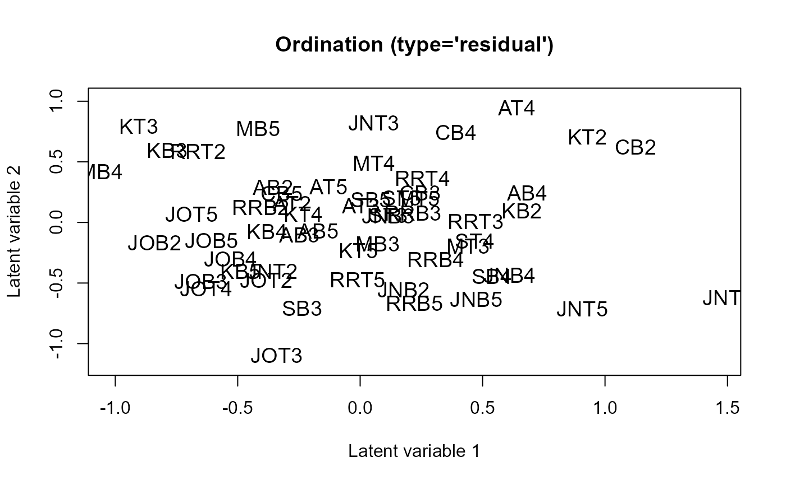
coefplot(fit)
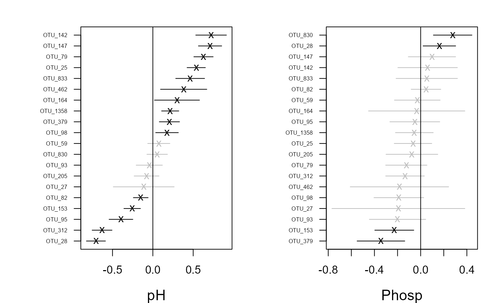
# \donttest{
# Inclusion of structured random row effect
sDesign<-data.frame(Site = microbialdata$Xenv$Site)
fit <- gllvm(y, X, formula = ~ pH + Phosp, family = poisson(),
studyDesign=sDesign, row.eff=~(1|Site))
## Load a dataset from the mvabund package
library(mvabund)
#>
#> Attaching package: 'mvabund'
#> The following object is masked from 'package:gllvm':
#>
#> coefplot
data(antTraits, package = "mvabund")
y <- as.matrix(antTraits$abund)
X <- as.matrix(antTraits$env)
TR <- antTraits$traits
# Fit model with environmental covariates Bare.ground and Shrub.cover
fit <- gllvm(y, X, formula = ~ Bare.ground + Shrub.cover,
family = poisson())
ordiplot(fit)
coefplot.gllvm(fit)
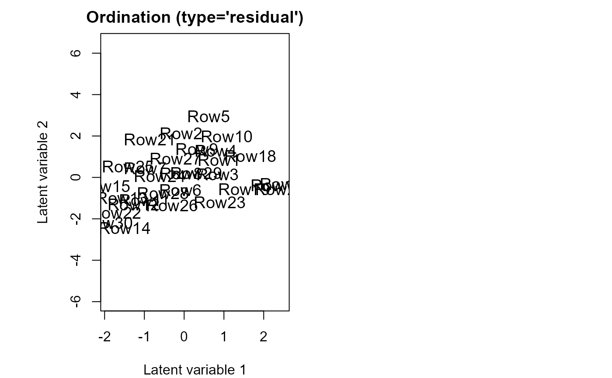
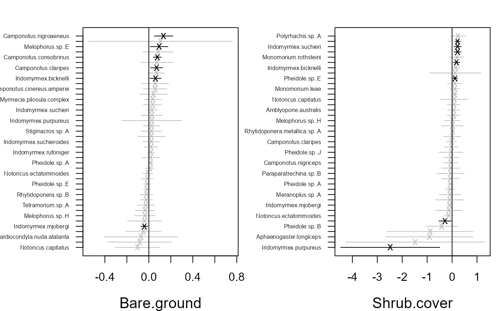
## Example 1: Fit model with two unconstrained latent variables
# Using variational approximation:
fitv0 <- gllvm(y, family = "negative.binomial", method = "VA")
ordiplot(fitv0)
plot(fitv0, mfrow = c(2,2))
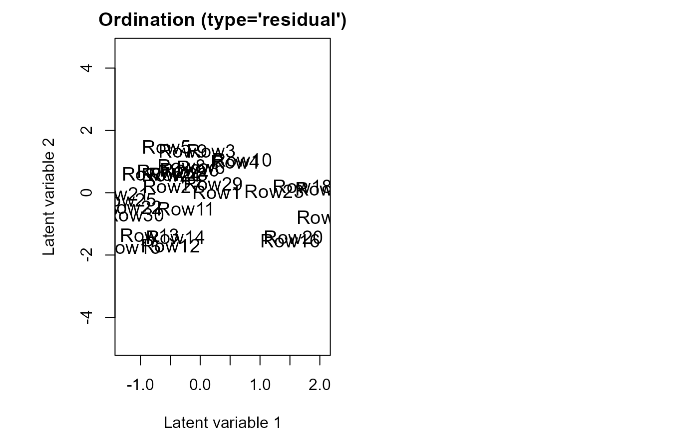
#> Warning: supplied color is neither numeric nor character
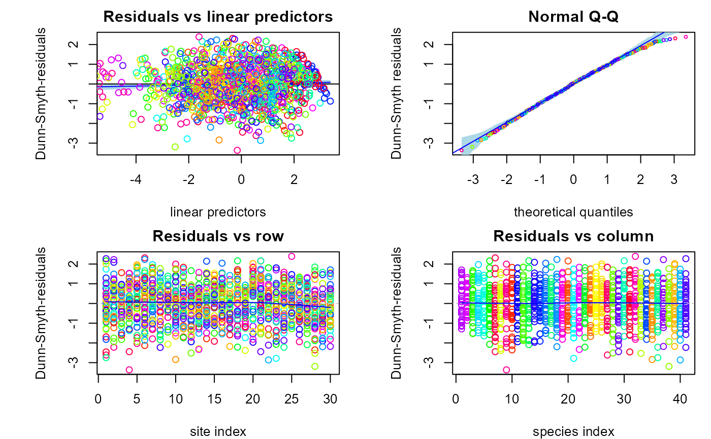
#> Warning: supplied color is neither numeric nor character
summary(fitv0)
#>
#> Call:
#> gllvm(y = y, family = "negative.binomial", method = "VA")
#>
#> Family: negative.binomial
#>
#> AIC: 4056.17 AICc: 4106.324 BIC: 4889.878 LL: -1865.1 df: 163
#>
#> Informed LVs: 0
#> Constrained LVs: 0
#> Unconstrained LVs: 2
#>
#> Formula: ~ 1
#> LV formula: ~ 0
#> Row effect: ~ 1
confint(fitv0)
#> 2.5 % 97.5 %
#> sigma.lv.LV1 -0.103596779 1.85080025
#> sigma.lv.LV2 1.077172935 4.48933940
#> theta.LV1.1 1.000000000 1.00000000
#> theta.LV1.2 -3.375361045 3.62292613
#> theta.LV1.3 -1.024563469 2.94564872
#> theta.LV1.4 -0.679416396 1.55155339
#> theta.LV1.5 -0.461946457 2.15804337
#> theta.LV1.6 -2.600909162 1.44383841
#> theta.LV1.7 -0.924992062 2.07176034
#> theta.LV1.8 -6.335004343 1.22294408
#> theta.LV1.9 -1.593688239 5.82301945
#> theta.LV1.10 -0.559061121 0.96180548
#> theta.LV1.11 -0.995287708 1.38069996
#> theta.LV1.12 -0.703096987 2.72933963
#> theta.LV1.13 -1.200838278 0.16183390
#> theta.LV1.14 -1.111157528 4.02242483
#> theta.LV1.15 -1.109878591 0.73214881
#> theta.LV1.16 -0.654152817 1.49023517
#> theta.LV1.17 -1.785680875 0.71515575
#> theta.LV1.18 -0.929946252 1.19769563
#> theta.LV1.19 -1.537255811 0.27052418
#> theta.LV1.20 -2.295447143 0.40653520
#> theta.LV1.21 -3.204704396 1.07475455
#> theta.LV1.22 -0.368370646 1.81014457
#> theta.LV1.23 -3.334314352 1.20029839
#> theta.LV1.24 -2.427152184 0.63633545
#> theta.LV1.25 -1.106761362 1.40691672
#> theta.LV1.26 -1.365231007 4.42318498
#> theta.LV1.27 -2.057511340 0.22228585
#> theta.LV1.28 -2.567205833 0.76268808
#> theta.LV1.29 -3.329872294 1.97404837
#> theta.LV1.30 -4.802926555 1.56660124
#> theta.LV1.31 -1.016505747 0.15412755
#> theta.LV1.32 -1.695619614 1.09745365
#> theta.LV1.33 -0.212416534 1.10356514
#> theta.LV1.34 -1.671529974 1.01469722
#> theta.LV1.35 -0.597914221 1.34012963
#> theta.LV1.36 -0.987878033 0.19181649
#> theta.LV1.37 -2.777092413 0.48854383
#> theta.LV1.38 -1.882895386 0.67657221
#> theta.LV1.39 -0.525443081 2.41763457
#> theta.LV1.40 -0.375577481 1.19648043
#> theta.LV1.41 -2.479953794 0.61159035
#> theta.LV2.1 0.000000000 0.00000000
#> theta.LV2.2 1.000000000 1.00000000
#> theta.LV2.3 -0.244926405 0.60944670
#> theta.LV2.4 -0.058024935 0.36356443
#> theta.LV2.5 -0.651705911 0.04093920
#> theta.LV2.6 -0.107582416 0.67606581
#> theta.LV2.7 -0.151723062 0.42708000
#> theta.LV2.8 -1.416690368 0.75991207
#> theta.LV2.9 -0.321751977 1.41123806
#> theta.LV2.10 -0.392872521 -0.01049269
#> theta.LV2.11 -0.634804418 -0.10021878
#> theta.LV2.12 -0.503297783 0.43385101
#> theta.LV2.13 -0.161601626 0.20479801
#> theta.LV2.14 -0.221544934 0.87833861
#> theta.LV2.15 -0.471312554 -0.09662658
#> theta.LV2.16 -0.556025906 0.01509578
#> theta.LV2.17 -0.631680149 0.04547478
#> theta.LV2.18 -0.483884244 0.17679199
#> theta.LV2.19 -0.363600289 0.10571699
#> theta.LV2.20 -0.512340134 0.19498830
#> theta.LV2.21 -0.932077066 0.20990004
#> theta.LV2.22 -0.116026393 0.37699839
#> theta.LV2.23 -1.114017850 -0.04366517
#> theta.LV2.24 -0.696499910 0.13926900
#> theta.LV2.25 -0.721258088 0.18283901
#> theta.LV2.26 -0.422604082 0.70790327
#> theta.LV2.27 -0.372660770 0.22420373
#> theta.LV2.28 -0.756108763 0.04819898
#> theta.LV2.29 -1.545154973 0.10764188
#> theta.LV2.30 -0.307274320 0.93014781
#> theta.LV2.31 -0.211031827 0.07090139
#> theta.LV2.32 -0.014484770 0.58033798
#> theta.LV2.33 -0.253863077 0.10709188
#> theta.LV2.34 -0.289127956 0.68818809
#> theta.LV2.35 -0.263434751 0.21007458
#> theta.LV2.36 -0.241972100 0.03942530
#> theta.LV2.37 -0.621233385 0.17246768
#> theta.LV2.38 -0.300912529 0.46344322
#> theta.LV2.39 -0.299116496 0.35709796
#> theta.LV2.40 -0.362541316 0.04883517
#> theta.LV2.41 -0.709338405 0.06374932
#> Intercept.Amblyopone.australis -1.853488661 -0.03147144
#> Intercept.Aphaenogaster.longiceps -6.258634380 -0.31575176
#> Intercept.Camponotus.cinereus.amperei -3.697420836 -0.83559995
#> Intercept.Camponotus.claripes -0.036415388 1.06028792
#> Intercept.Camponotus.consobrinus 0.642102324 1.79316552
#> Intercept.Camponotus.nigriceps -1.679320426 0.47981342
#> Intercept.Camponotus.nigroaeneus -1.317285615 0.23422593
#> Intercept.Cardiocondyla.nuda.atalanta -5.333020720 -0.01397102
#> Intercept.Crematogaster.sp..A -4.740928465 0.10320211
#> Intercept.Heteroponera.sp..A 0.802061206 1.67636391
#> Intercept.Iridomyrmex.bicknelli 0.772365560 1.80407506
#> Intercept.Iridomyrmex.dromus -1.858629677 0.26236865
#> Intercept.Iridomyrmex.mjobergi 0.981615452 1.68321607
#> Intercept.Iridomyrmex.purpureus -1.287468463 1.11343107
#> Intercept.Iridomyrmex.rufoniger 2.021712403 2.70265754
#> Intercept.Iridomyrmex.suchieri -0.135404347 1.04234698
#> Intercept.Iridomyrmex.suchieroides -1.136153073 0.24753984
#> Intercept.Melophorus.sp..E -2.009272697 -0.37476353
#> Intercept.Melophorus.sp..F 0.082415732 0.98211142
#> Intercept.Melophorus.sp..H -1.273684430 0.15974543
#> Intercept.Meranoplus.sp..A -1.455128783 0.64803304
#> Intercept.Monomorium.leae 0.841778729 1.84768437
#> Intercept.Monomorium.rothsteini -0.732316192 1.20871802
#> Intercept.Monomorium.sydneyense -1.321283787 0.40677096
#> Intercept.Myrmecia.pilosula.complex -2.053749678 -0.20212458
#> Intercept.Notoncus.capitatus -2.473090843 0.53518668
#> Intercept.Notoncus.ectatommoides 0.238742737 1.22209023
#> Intercept.Nylanderia.sp..A 0.029632879 1.46946450
#> Intercept.Ochetellus.glaber -3.866770830 -0.21666905
#> Intercept.Paraparatrechina.sp..B -3.312121746 0.27489675
#> Intercept.Pheidole.sp..A 2.092209444 2.54350969
#> Intercept.Pheidole.sp..B -2.030103152 -0.15318947
#> Intercept.Pheidole.sp..E 1.226638959 1.97951042
#> Intercept.Pheidole.sp..J -2.978214607 -0.56714799
#> Intercept.Polyrhachis.sp..A -1.984298777 -0.52860234
#> Intercept.Rhytidoponera.metallica.sp..A 1.772529353 2.27334305
#> Intercept.Rhytidoponera.sp..B -0.397708385 1.09373741
#> Intercept.Solenopsis.sp..A -3.427164138 -0.97579538
#> Intercept.Stigmacros.sp..A -1.091216415 0.51308330
#> Intercept.Tapinoma.sp..A 0.282453400 1.23733491
#> Intercept.Tetramorium.sp..A -0.632172191 0.77827553
#> phi.Amblyopone.australis -0.270744306 1.34951480
#> phi.Aphaenogaster.longiceps -0.211436486 1.00814053
#> phi.Camponotus.cinereus.amperei -1.084013301 2.59065288
#> phi.Camponotus.claripes 0.057458679 1.51932452
#> phi.Camponotus.consobrinus 0.052987758 3.83183183
#> phi.Camponotus.nigriceps -0.061325607 0.51819972
#> phi.Camponotus.nigroaeneus -0.106572760 1.07125851
#> phi.Cardiocondyla.nuda.atalanta -0.070028346 0.42282605
#> phi.Crematogaster.sp..A -0.079407111 0.52843063
#> phi.Heteroponera.sp..A 0.225146169 2.46885152
#> phi.Iridomyrmex.bicknelli -0.118101086 5.03005993
#> phi.Iridomyrmex.dromus -0.066757470 0.56596156
#> phi.Iridomyrmex.mjobergi -0.170199066 4.83897757
#> phi.Iridomyrmex.purpureus 0.009083502 0.42277445
#> phi.Iridomyrmex.rufoniger -0.083809294 19.14608389
#> phi.Iridomyrmex.suchieri -0.154699555 2.35791897
#> phi.Iridomyrmex.suchieroides -0.884451693 4.74668083
#> phi.Melophorus.sp..E -0.832176320 2.32028468
#> phi.Melophorus.sp..F -0.512480540 5.30082241
#> phi.Melophorus.sp..H -0.424024090 3.55517777
#> phi.Meranoplus.sp..A -0.018459554 0.63752744
#> phi.Monomorium.leae 0.248442265 1.69128088
#> phi.Monomorium.rothsteini 0.014823251 2.74656798
#> phi.Monomorium.sydneyense -0.099514151 1.27886013
#> phi.Myrmecia.pilosula.complex -0.365793757 1.37931885
#> phi.Notoncus.capitatus -0.041835637 0.38612709
#> phi.Notoncus.ectatommoides -0.084173925 4.06966031
#> phi.Nylanderia.sp..A 0.107368058 1.41124120
#> phi.Ochetellus.glaber -0.188675654 1.06100097
#> phi.Paraparatrechina.sp..B -0.063989472 0.30184581
#> phi.Pheidole.sp..A -1.416707906 20.56551661
#> phi.Pheidole.sp..B -0.348482526 1.33681304
#> phi.Pheidole.sp..E 0.320677917 2.69259272
#> phi.Pheidole.sp..J -0.276763966 0.79871876
#> phi.Polyrhachis.sp..A -7.667384066 15.05304892
#> phi.Rhytidoponera.metallica.sp..A -0.858531780 15.09466648
#> phi.Rhytidoponera.sp..B 0.003911032 1.35235635
#> phi.Solenopsis.sp..A -1.918670111 4.16909831
#> phi.Stigmacros.sp..A -0.028717992 1.05055228
#> phi.Tapinoma.sp..A 0.106426736 2.27942788
#> phi.Tetramorium.sp..A -0.300540717 3.63477539
## Example 1a: Fit concurrent ordination model with two latent variables and with
# quadratic response model
# We scale and centre the predictors to improve convergence
fity1 <- gllvm(y, X = scale(X), family = "negative.binomial",
num.lv.c=2, method="VA")
ordiplot(fity1, biplot = TRUE)
#'## Example 1b: Fit constrained ordination model with two latent variables and with
# random canonical coefficients
fity2 <- gllvm(y, X = scale(X), family = "negative.binomial",
num.RR=2, randomB="LV", method="VA")
#> Warning: 15 parameter(s) have negative variance estimates (lambda x14, lg_phi x1). The model likely has not converged - consider re-fitting.
# Using Laplace approximation: (this line may take about 30 sec to run)
fitl0 <- gllvm(y, family = "negative.binomial", method = "LA")
ordiplot(fitl0)
# Poisson family:
fit.p <- gllvm(y, family = poisson(), method = "LA")
ordiplot(fit.p)
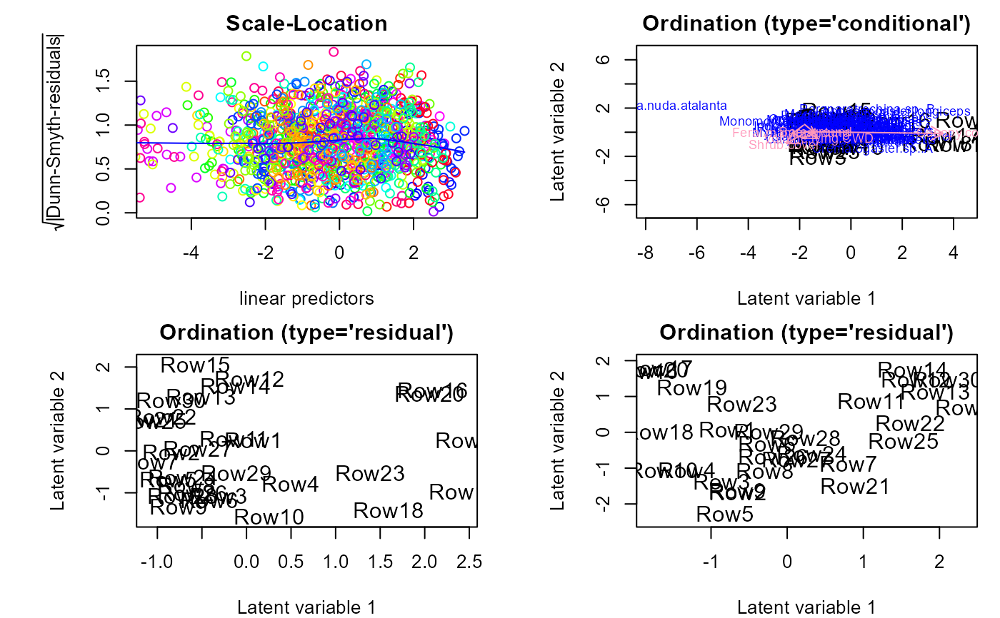
# Use poisson model as a starting parameters for ZIP-model, this line
# may take few minutes to run
fit.z <- gllvm(y, family = "ZIP", method = "LA",
control.start = list(start.fit = fit.p))
#> Warning: 73 parameter(s) have negative variance estimates (b x20, lambda x35, lg_phi x17, sigmaLV x1). The model likely has not converged - consider re-fitting.
#> Warning: Determinant of the variance-covariance matix is zero. Please double check your model for e.g. overfitting or lack of convergence.
ordiplot(fit.z)
## Example 2: gllvm with environmental variables
# Fit model with two latent variables and all environmental covariates,
fitvX <- gllvm(formula = y ~ X, family = "negative.binomial")
#> Warning: 36 parameter(s) have negative variance estimates (lambda x34, lg_phi x1, sigmaLV x1). The model likely has not converged - consider re-fitting.
ordiplot(fitvX, biplot = TRUE)
coefplot.gllvm(fitvX)
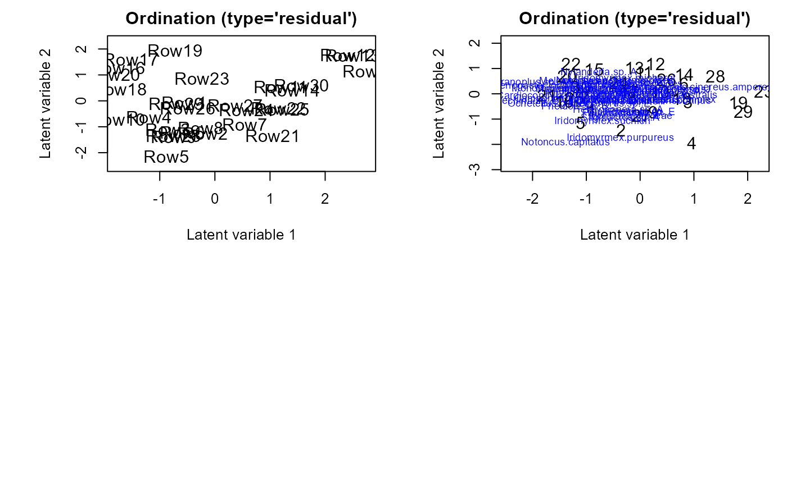
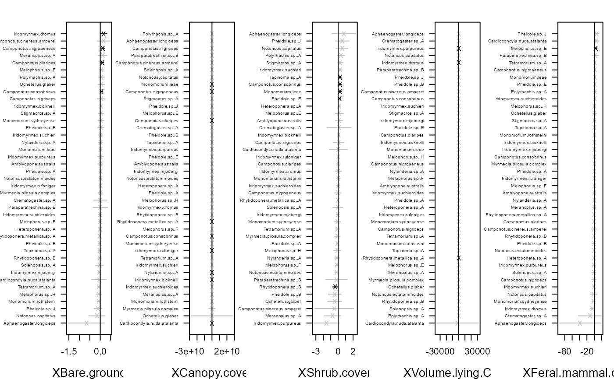
# Fit model with environmental covariates Bare.ground and Shrub.cover
fitvX2 <- gllvm(y, X, formula = ~ Bare.ground + Shrub.cover,
family = "negative.binomial")
ordiplot(fitvX2)
coefplot.gllvm(fitvX2)
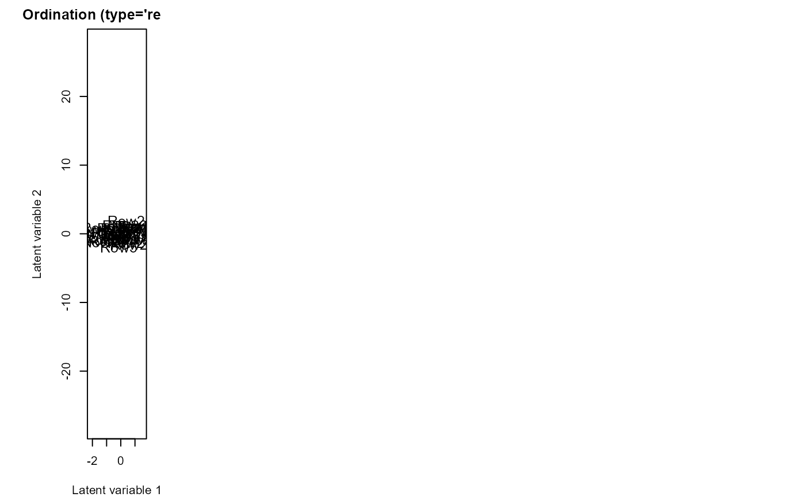
# Use 5 initial runs and pick the best one
fitvX_5 <- gllvm(y, X, formula = ~ Bare.ground + Shrub.cover,
family = "negative.binomial", control.start=list(n.init = 5, jitter.var = 0.1))
ordiplot(fitvX_5)
coefplot.gllvm(fitvX_5)
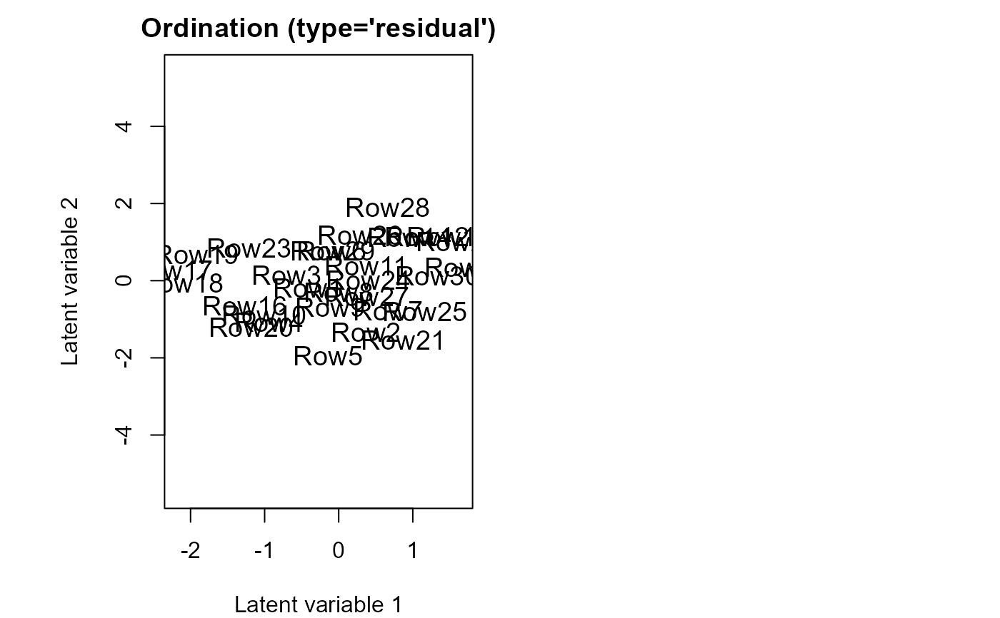
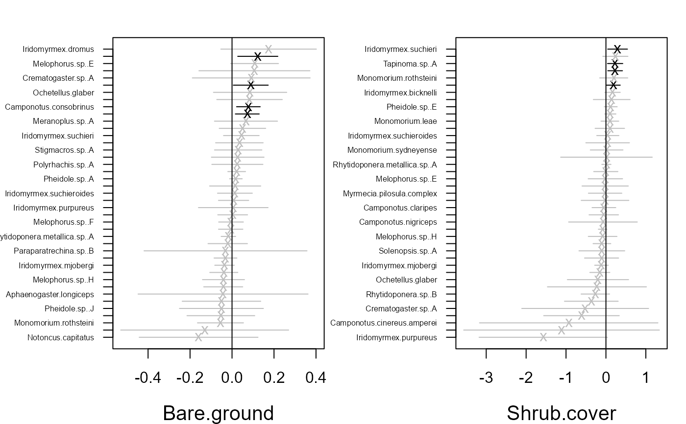
## Example 3: Data in long format
# Reshape data to long format:
datalong <- reshape(data.frame(cbind(y,X)), direction = "long",
varying = colnames(y), v.names = "y")
head(datalong)
#> Bare.ground Canopy.cover Shrub.cover Volume.lying.CWD Feral.mammal.dung
#> 1.1 9.00 3.5 0.50 0.03253833 0.20
#> 2.1 6.00 0.0 0.00 0.01202944 0.65
#> 3.1 9.25 0.0 8.10 0.00804195 0.00
#> 4.1 23.25 0.0 0.25 0.00000000 0.20
#> 5.1 8.75 0.0 3.35 0.00993944 0.35
#> 6.1 32.25 0.0 0.00 0.03142221 1.00
#> time y id
#> 1.1 1 0 1
#> 2.1 1 0 2
#> 3.1 1 0 3
#> 4.1 1 4 4
#> 5.1 1 2 5
#> 6.1 1 0 6
fitvLong <- gllvm(data = datalong, formula = y ~ Bare.ground + Shrub.cover,
family = "negative.binomial")
## Example 4: Fourth corner model
# Fit fourth corner model with two latent variables
fitF1 <- gllvm(y = y, X = X, TR = TR, family = "negative.binomial")
coefplot.gllvm(fitF1)
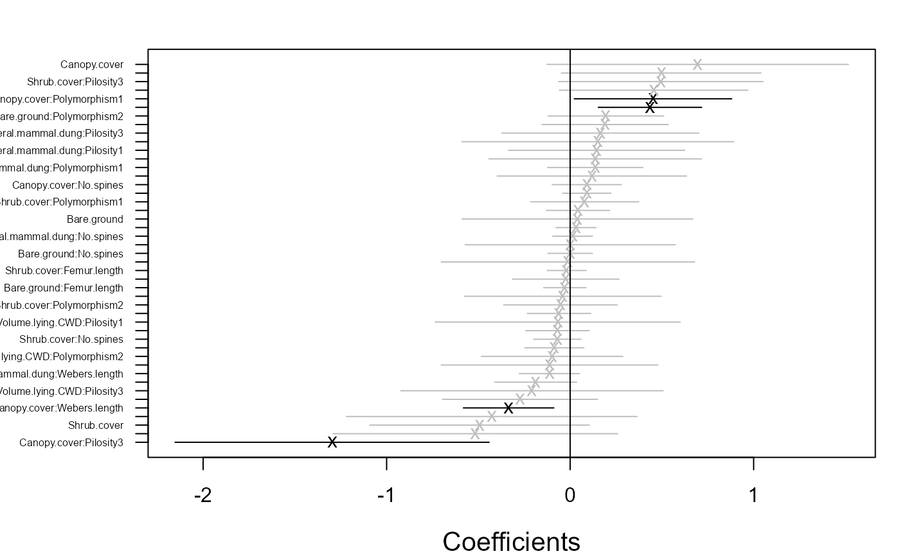
# Fourth corner can be plotted also with next lines
#fourth = fitF1$fourth.corner
#library(lattice)
#a = max( abs(fourth) )
#colort = colorRampPalette(c("blue","white","red"))
#plot.4th = levelplot(t(as.matrix(fourth)), xlab = "Environmental Variables",
# ylab = "Species traits", col.regions = colort(100),
# at = seq( -a, a, length = 100), scales = list( x = list(rot = 45)))
#print(plot.4th)
# Specify model using formula
fitF2 <- gllvm(y = y, X = X, TR = TR,
formula = ~ Bare.ground + Canopy.cover * (Pilosity + Webers.length),
family = "negative.binomial")
ordiplot(fitF2)
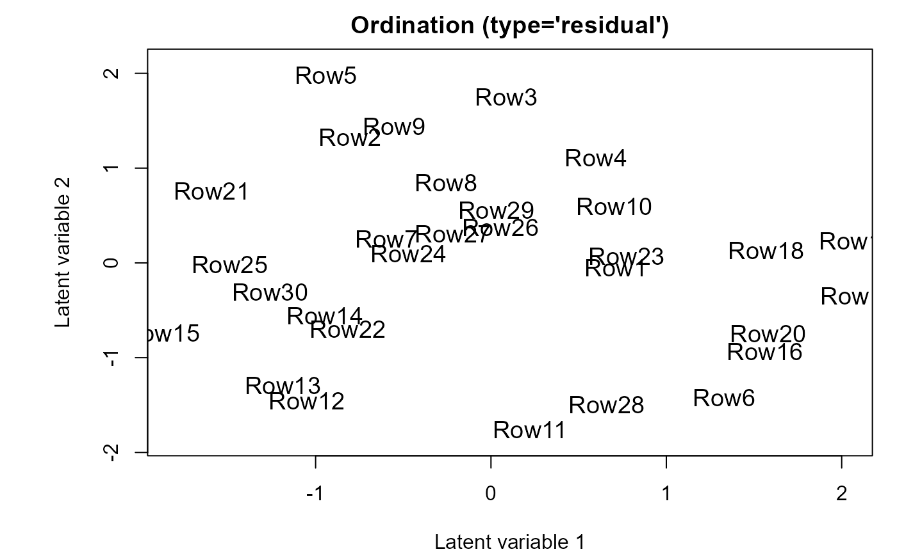
coefplot.gllvm(fitF2)
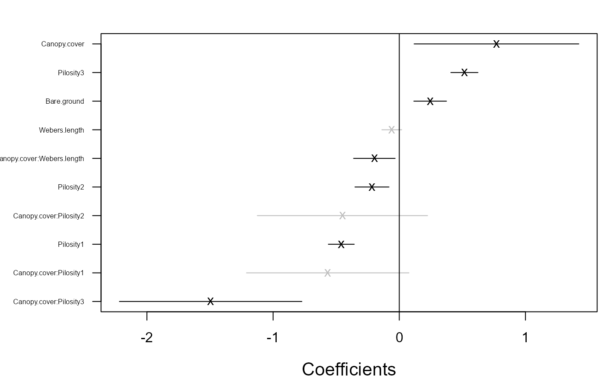
## Include species specific random slopes to the fourth corner model
fitF3 <- gllvm(y = y, X = X, TR = TR,
formula = ~ Bare.ground + Canopy.cover * (Pilosity + Webers.length),
family = "negative.binomial", randomX = ~ Bare.ground + Canopy.cover,
control.start = list(n.init = 3))
#> Warning: 19 parameter(s) have negative variance estimates (lambda x18, sigmaLV x1). The model likely has not converged, consider re-fitting.
ordiplot(fitF3)
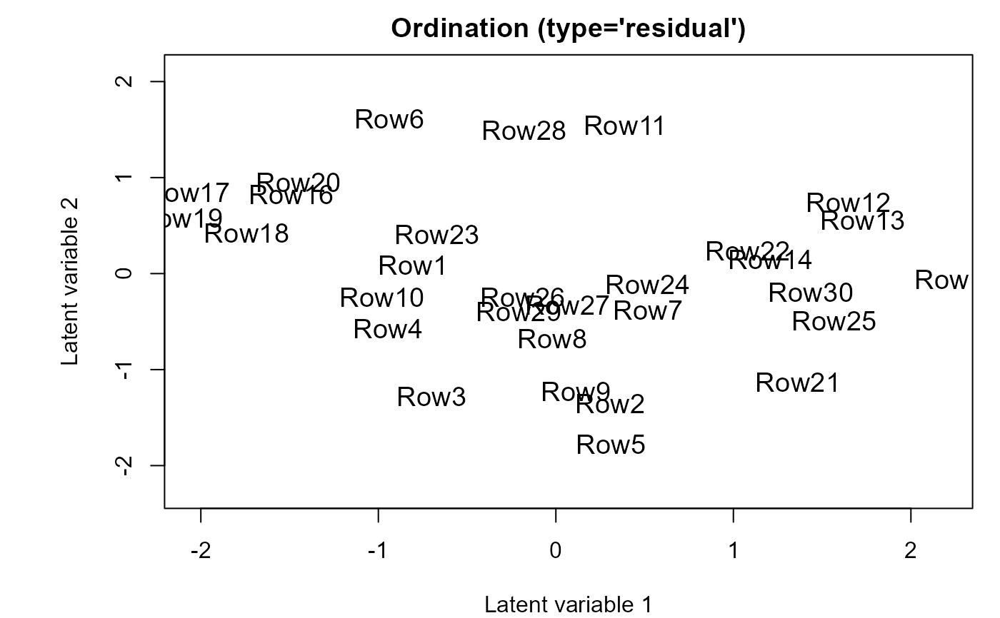
coefplot.gllvm(fitF3)
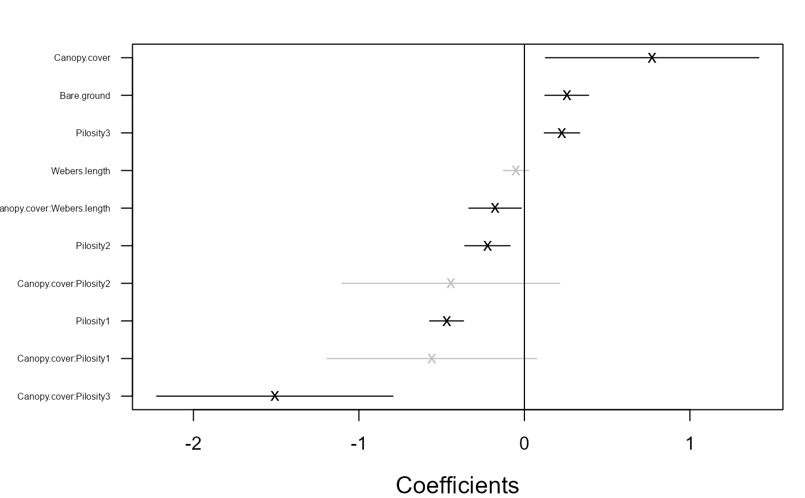
## Example 5: Fit Tweedie model
# Load coral data
data(tikus)
ycoral <- tikus$abund
# Let's consider only years 1981 and 1983
ycoral <- ycoral[((tikus$x$time == 81) + (tikus$x$time == 83)) > 0, ]
# Exclude species which have observed at less than 4 sites
ycoral <- ycoral[-17, (colSums(ycoral > 0) > 4)]
# Fit Tweedie model for coral data (this line may take few minutes to run)
fit.twe <- gllvm(y = ycoral, family = "tweedie", method = "EVA", seed=111)
#> Warning: method L-BFGS-B uses 'factr' (and 'pgtol') instead of 'reltol' and 'abstol'
fit.twe
#> Call:
#> gllvm(y = ycoral, family = "tweedie", method = "EVA", seed = 111)
#> family:
#> [1] "tweedie"
#> method:
#> [1] "EVA"
#>
#> log-likelihood: -631.5634
#> Residual degrees of freedom: 271
#> AIC: 1405.127
#> AICc: 1442.994
#> BIC: 1677.398
## Example 6: Random row effects
fitRand <- gllvm(y, family = "negative.binomial", row.eff = "random")
#> Warning: 29 parameter(s) have negative variance estimates (lambda x29). The model likely has not converged - consider re-fitting.
ordiplot(fitRand, biplot = TRUE)
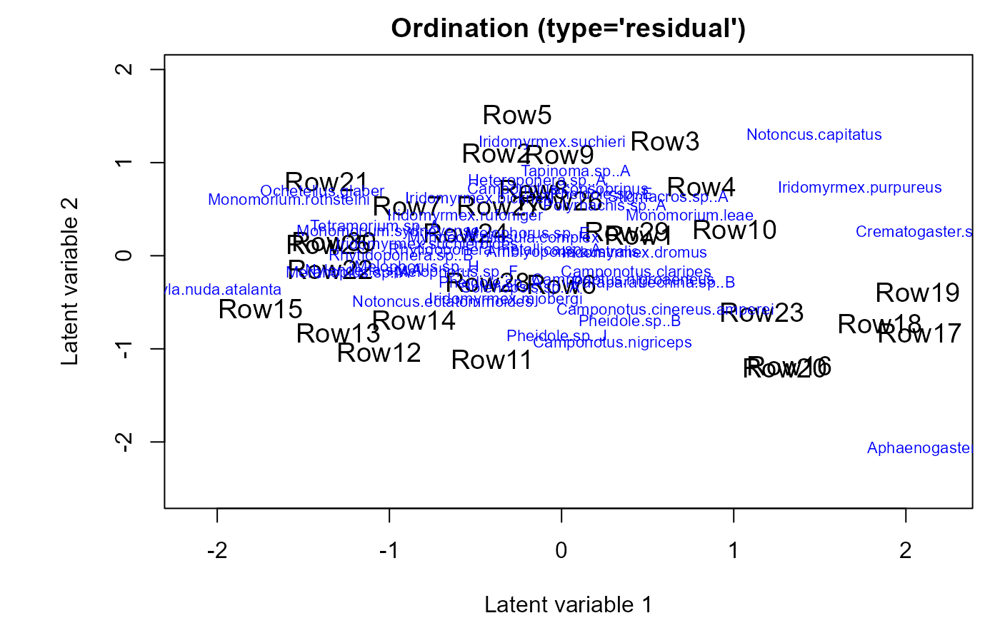
# }